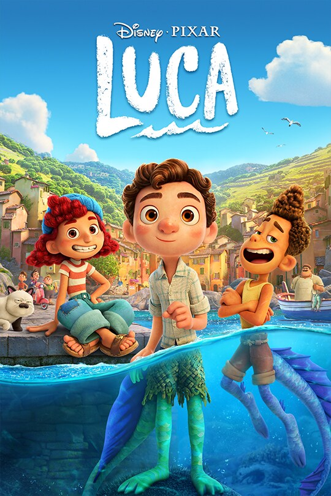

-
A Bugs life
Rating: G
Runtime: 1h 26min
Date: November 25, 1998
Genre: Action, Adventure, Animation, Comedy
Embark on an incredible journey with one little ant as he searches for a brave band of warriors to help him battle the bullying grasshoppers who threaten his home. When he stumbles on a bumbling troupe of circus bugs instead, their only hope for victory is the bond of friendship and the awesome power of imagination.
Directed By: Andrew Stanton, John Lasseter
Written By:Bob Shaw, Don McEnery
Produced By:Pixar Studios
Cast: Denis Leary, Jonathan Harris, Kevin Spacey, Hayden Panettiere, Bonnie Hunt, Julia Louis-Dreyfus, Joe Ranft, Phyllis Diller, Brad Garrett, Madeline Kahn, Michael McShane, Richard Kind, John Ratzenberger, David Hyde Pierce, Michael McShane, Dave Foley
-

Alice in Wonderland
Rating: G
Runtime: 1h 15min
Date: July 28, 1951
Genre: Animation, Adventure, Family, Fantasy, Musical
Tumble down the rabbit hole with Alice for a fantastical new adventure in an imaginative new twist on one of the most beloved stories of all time. Alice, now 19 years old, returns to the whimsical world she first entered as a child and embarks on a journey to discover her true destiny. This Wonderland filled with familiar friends and characters is a world beyond your imagination and unlike anything you've seen before.
Directed By: Clyde Geronimi, Wilfred Jackson, Hamilton Luske
Written By:Winston Hibler, Ted Sears, Bill Peet, Erdman Penner, Joe Rinaldi, Milt Banta, William Cottrell
Produced By:Walt Disney Productions
Cast: Eleanor Tomlinson, Frances De La Tour, Stephen Fry, Christopher Lee, Paul Whitehouse, Tim Pigott Smith, Anne Hathaway, Johnny Depp, Michael Sheen, Geraldine James, Marton Csokas, Lindsay Duncan, Matt Lucas, Barbara Windsor, Mia Wasikowska, Crispin Glover, Barbara Windsor, Eleanor Gecks, Michael Gough, Imelda Staunton, Crispin Glover, Jemma Powell, Leo Bill, Alan Rickman (canon), Helena Bonham Carter, Jim Carter, Matt Lucas, Timothy Spall
-

Bambi
Rating: G
Runtime: 1h 10min
Date: August 21, 1942
Genre: Animation, Drama, Family
Awaken your senses to the majesty of "Bambi," Walt Disney's beloved coming-of-age story. A timeless classic that has been loved for generations, "Bambi" now joins the Walt Disney Signature Collection in this celebrated anniversary edition. In this life-changing adventure, Bambi sets off with his best friends Thumper and Flower to explore the wonders and challenges of the woods -- and fulfill his destiny as prince of the forest.
Directed By: David Hand
Cast: Fred Shields, Peter Behn, Cammie King Conlon, Will Wright, Paula Winslowe, Stan Alexander, Donnie Dunagen
-

Bolt
Rating: PG
Runtime: 1h 36min
Date: November 21, 2008
Genre: Animation, Adventure, Comedy, Drama, Family
For super-dog Bolt, every day is filled with adventure, danger and intrigue -- at least until the cameras stop rolling. When the star of a hit television show is accidentally shipped from his Hollywood soundstage to New York City, he begins his biggest adventure yet -- a cross-country journey through the real world. Armed only with the delusions that all his amazing feats and powers are real, and with the help of two unlikely traveling companions -- a jaded, abandoned housecat named Mittens and a TV-obsessed hamster named Rhino -- Bolt discovers he doesn't need superpowers to be a hero.
Directed By: Chris Williams, Byron Howard
Written By: Dan Fogelman, Chris Williams
Produced By:Walt Disney Animation Studios
Cast: John Travolta, Miley Cyrus, Susie Essman, Mark Walton, Malcolm McDowell, James Lipton, Greg Germann, Diedrich Bader, Nick Swardson, J.P. Manoux, Dan Fogelman, Kari Wahlgren, Chloë Grace Moretz, Randy Savage, Ronn Moss, Grey DeLisle, Lino DiSalvo, Todd Cummings, Jenny Lewis, Brian Stepanek, Tim Mertens, Sean Donnellan, Chris Williams, Byron Howard, Nathan Greno
-

Brave
Rating: PG
Runtime: 1h 33min
Date: June 22, 2012
Genre: Animation, Adventure, Comedy, Family, Fantasy
Merida, an impulsive young lady and daughter to King Fergus and Queen Elinor, is determined to carve her own path in life. Defying the age-old and sacred customs, Merida's actions inadvertently unleash chaos and fury with the other Scottish Lords, and in the process she stumbles upon an eccentric and wise old woman who grants her ill-fated wish. The ensuing peril forces Merida to discover the true meaning of bravery in order to undo a beastly curse before it's too late.
Directed By:Brenda Chapman, Mark Andrews
Produced By:Pixar Studios
Cast: Kelly Macdonald, Billy Connolly, Emma Thompson, Julie Walters, Robbie Coltrane, Kevin McKidd, Craig Ferguson, Sally Kinghorn, Eilidh Fraser, Peigi Barker, Steven Cree, Steve Purcell, Callum O'Neill, Patrick Doyle, John Ratzenberger, John Lasseter, Mark Andrews
-

Cars
Rating: G
Runtime: 1h 57min
Date: June 9, 2006
Genre: Animation, Adventure, Comedy, Family, Sport
Hotshot rookie race car Lightning McQueen is living life in the fast lane until he hits a detour on his way to the most important race of his life. Stranded in Radiator Springs, a forgotten town on the old Route 66, he meets Sally, Mater, Doc Hudson and a variety of quirky characters who help him discover that there's more to life than trophies and fame.
Directed By: John Lasseter, Joe Ranft
Written By: John Lasseter, Joe Ranft, Jorgen Klubien
Produced By:Walt Disney Pictures, Pixar Animation Studios
Cast:Paul Newman, Michael Wallis, George Carlin, John Ratzenberger, Owen Wilson, Richard Petty, Paul Dooley, Bonnie Hunt, Jenifer Lewis, Michael Keaton, Tony Shalhoub, Larry The Cable Guy, Cheech Marin
-
Chicken Little
Rating: G
Runtime: 1h 21min
Date: November 4, 2005
Genre: Animation, Adventure, Comedy, Family, Sci-Fi
After Chicken Little causes widespread panic -- when he mistakes a falling acorn for a piece of the sky -- the young chicken is determined to restore his reputation. But just as things are starting to go his way, a real piece of the sky lands on his head. Chicken Little and his band of misfit friends, Abby Mallard (aka Ugly Duckling), Runt of the Litter and Fish Out of Water, attempt to save the world without sending the town into a whole new panic.
Directed By: Mark Dindal
Written By: Steve Bencich, Ron J. Friedman, Ron Anderson, Mark Dindal, Mark Kennedy
Produced By:Walt Disney Pictures, Walt Disney Animation Studios
Cast: Zach Braff, Garry Marshall, Don Knotts, Patrick Stewart, Amy Sedaris, Steve Zahn, Joan Cusack, Wallace Shawn, Harry Shearer, Fred Willard, Catherine O'Hara, Patrick Warburton, Adam West, Mark Walton, Mark Dindal, Dan Molina, Joe Whyte, Sean Elmore, Evan Dunn, Matthew Josten, Kelly Hoover, Will Finn, Dara McGarry, Will Finn, Mark Kennedy, Mark Dindal, Dan Molina, Joe Whyte, Sean Elmore, Evan Dunn, Matthew Josten, Kelly Hoover, Will Finn, Dara McGarry, Will Finn, Mark Kennedy
-
Dumbo
Rating: G
Runtime: 1h 4min
Date: October 23, 1941
Genre: Animation, Drama, Family, Musical
Meet Dumbo, Mrs. Jumbo's sweet little "Baby Mine" who charms all who see him, until it's discovered that he has huge floppy ears! With the support of his very best friend, Timothy the mouse, Dumbo soon learns that his spectacular ears make him unique and special, allowing him to soar to fame as the world's only flying elephant.
Directed By: Ben Sharpsteen
Cast: Colin Farrell , Michael Keaton, Danny DeVito, Eva Green, Alan Arkin, Nico Parker, Finley Hobbins
-

Elemental
Rating: G
Runtime: 1h 33min
Date: October 23, 1941
Genre: Documentary
Elemental tells the story of three individuals united by their deep connection with nature and driven to confront some of the most pressing ecological challenges of our time. The film follows Rajendra Singh, an Indian government official gone rogue, on a 40-day pilgrimage down India's once pristine Ganges river, now polluted and dying. Across the globe in northern Canada, Eriel Deranger, a young indigenous leader, attempts to save her land and her people from the environmental devastation of Alberta's oil sands. And in Australia, inventor Jay Harman searches for investors willing to risk millions on his revolutionary ocean energy generator and prove that clean energy is a viable solution.
Directed By: Gayatri Roshan, Emmanuel Vaughan-Lee
Produced By:Walt Disney Pictures, Walt Disney Animation Studios
Cast: Rajendra Singh, Eriel Deranger, Jay Harman
-

Encanto
Rating: PG
Runtime: 1h 42min
Date: November 24, 2021
Genre: Animation, Adventure, Comedy, Family, Fantasy, Musical
Encanto tells the tale of an extraordinary family, the Madrigals, who live hidden in the mountains of Colombia, in a magical house, in a vibrant town, in a wondrous, charmed place called an Encanto. The magic of the Encanto has blessed every child in the family with a unique gift from super strength to the power to heal—every child except one, Mirabel. But when she discovers that the magic surrounding the Encanto is in danger, Mirabel decides that she, the only ordinary Madrigal, might just be her exceptional family's last hope.
Directed By: Jared Bush, Byron Howard, Charise Castro Smith
Produced By:Walt Disney Animation Studios
Cast: Stephanie Beatriz, María Cecilia Botero, Wilmer Valderrama, Adassa, Diane Guerrero, Mauro Castillo, Angie Cepeda, Jessica Darrow, Rhenzy Feliz, Carolina Gaitán, Ravi Cabot-Conyers, John Leguizamo
-

Finding Dory
Rating: PG
Runtime: 1h 37min
Date: June 17, 2016
Genre: Animation, Adventure, Comedy, Family
Disney•Pixar's "Finding Dory" welcomes back to the big screen everyone's favorite forgetful blue tang Dory, who's living happily in the reef with Marlin and Nemo. When Dory suddenly remembers that she has a family out there who may be looking for her, the trio takes off on a life-changing adventure across the ocean to California's prestigious Marine Life Institute, a rehabilitation center and aquarium. In an effort to find her mom and dad, Dory enlists the help of three of the MLI's most intriguing residents: Hank, a cantankerous octopus who frequently gives employees the slip; Bailey, a beluga whale who is convinced his biological sonar skills are on the fritz; and Destiny, a nearsighted whale shark. Deftly navigating the complex inner workings of the MLI, Dory and her friends discover the magic within their flaws, friendships and family.
Directed By: Andrew Stanton, Angus MacLane
Written By: Andrew Stanton, Victoria Strouse
Produced By:Walt Disney Pictures, Pixar Animation Studios
Cast: Ty Burrell, Victoria Strouse, Diane Keaton, Eugene Levy, Ellen DeGeneres, Albert Brooks (canon), Hayden Rolence
-

Frozen II
Rating: PG
Runtime: 1h 43min
Date: November 22, 2019
Genre: Animation, Adventure, Comedy, Family, Fantasy, Musical
Why was Elsa born with magical powers? The answer is calling her and threatening her kingdom. Together with Anna, Kristoff, Olaf and Sven, she'll set out on a dangerous but remarkable journey. In "Frozen," Elsa feared her powers were too much for the world. In "Frozen II," she must hope they are enough.
Directed By: Chris Buck, Jennifer Lee
Written By: Jennifer Lee, Allison Schroeder, Chris Buck, Marc Smith, Kristen Anderson-Lopez, Robert Lopez
Produced By:Walt Disney Animation Studios
Cast: Kristen Bell, Idina Menzel, Josh Gad, Jonathan Groff, Sterling K. Brown, Evan Rachel Wood, Alfred Molina, Martha Plimpton, Jason Ritter, Rachel Matthews, Jeremy Sisto, Ciarán Hinds, Alan Tudyk, Hadley Gannaway, Mattea Conforti, Aurora, Santino Fontana, Paul Briggs, Jackson Stein, Delaney Rose Stein, Stephen John Anderson, Paul Briggs, Jackson Stein, Delaney Rose Stein, Stephen John Anderson
-

High School Musical
Rating: G
Runtime: 1h 38min
Date: January 20, 2006
Genre: Comedy, Drama, Family, Music, Musical, Romance
High School Musical is a story about two high school juniors from rival cliques – Troy Bolton, captain of the basketball team, and Gabriella Montez, a beautiful and shy transfer student who excels in math and science. Together, they try out for the lead parts in their high school musical, and as a result, divide the school. Despite other students' attempts to thwart their dreams, Troy and Gabriella resist peer pressure and rivalry, inspiring others along the way not to "stick to the status quo."
Directed By: Kenny Ortega
Written By: Peter Barsocchini
Produced By:Disney Channel Original Movies
Cast: Zac Efron, Vanessa Hudgens, Ashley Tisdale, Lucas Grabeel, Corbin Bleu, Monique Coleman, Bart Johnson, Alyson Reed, Olesya Rulin, Chris Warren Jr., Ryne Sanborn, Kaycee Stroh, Leslie Wing, Socorro Herrera, Joey Miyashima, Dutch Whitlock, Ryan Templeman, Irene Santiago, Malinda Money, Anne Kathryn Parma, Nick Whitaker, Drew Seeley, Tanya Chisholm, Kelli Baker, Jessica Tuck, Robert Curtis Brown, Jessica Rau, Leslie Wing, Socorro Herrera, Joey Miyashima, Dutch Whitlock, Ryan Templeman, Irene Santiago, Malinda Money, Anne Kathryn Parma, Nick Whitaker, Drew Seeley, Tanya Chisholm, Kelli Baker, Jessica Tuck, Robert Curtis Brown, Jessica Rau
-
Honey, I Blew Up the Kid
Rating: PG
Runtime: 1h 29min
Date: July 17, 1992
Genre: Adventure, Comedy, Family, Romance, Sci-Fi
Wacky scientist Wayne Szalinski accidentally zaps his two-and-a-half-year-old son with a particle beam, causing the child to grow whenever coming in contact with electricity. Soon topping 112 feet, the overgrown baby is attracted to the bright, shiny lights of Las Vegas, and nothing stands in his way!
Directed By: Randal Kleiser
Written By: Garry Goodrow, Thom Eberhardt, Peter Elbling, Stuart Gordon
Produced By:Walt Disney Pictures, Touchstone Pictures
Cast: Rick Moranis, Marcia Strassman, Robert Oliveri, Daniel Shalikar, Joshua Shalikar, Lloyd Bridges, John Shea, Keri Russell, Ron Canada, Amy O'Neill, Gregory Sierra
-

Honey, I Shrunk the Kids
Rating: PG
Runtime: 1h 33min
Date: June 23, 1989
Genre: Adventure, Comedy, Family, Sci-Fi
Wayne Szalinski, a wacky inventor, accidentally shrinks his kids to one-quarter-inch tall and tosses them out in the trash. When they're accidentally thrown out with the trash, the kids must journey through their backyard to return to their normal size.
Directed By: Joe Johnston
Written By: Stuart Gordon, Brian Yuzna, Ed Naha, Tom Schulman
Produced By:Walt Disney Pictures, Silver Screen Partners III
Cast: Rick Moranis, Matt Frewer, Marcia Strassman, Kristine Sutherland, Thomas Wilson Brown, Jared Rushton, Amy O'Neill, Robert Oliveri, Carl Steven, Mark L. Taylor, Kimmy Robertson, Lou Cutell, Laura Waterbury, Martin Aylett, Trevor Galtress, Janet Sunderland, Craig Richard Nelson, Frank Welker, Janet Sunderland, Craig Richard Nelson, Frank Welker
-
The Lion King
Rating: PG
Runtime: 1h 58min
Date: July 19, 2019
Genre: Action, Action-Adventure, Drama, Family, Musical
Disney’s film journeys to the African savanna where a future king is born. Simba idolizes his father, King Mufasa, and takes to heart his own royal destiny. But not everyone in the kingdom celebrates the new cub’s arrival. Scar, Mufasa’s brother—and former heir to the throne—has plans of his own. The battle for Pride Rock is ravaged with betrayal, tragedy and drama, ultimately resulting in Simba’s exile. With help from a curious pair of newfound friends, Simba will have to figure out how to grow up and take back what is rightfully his. The all-star cast includes Donald Glover as Simba, Beyoncé Knowles-Carter as Nala, James Earl Jones as Mufasa, Chiwetel Ejiofor as Scar, Seth Rogen as Pumbaa and Billy Eichner as Timon, and utilizes pioneering filmmaking techniques to bring treasured characters to life in a whole new way.
Directed By: Jon Favreau
Written By: Jeff Nathanson
Produced By: Jon Favreau, Jeffrey Silver, Karen Gilchrist
Cast: Donald Glover, Seth Rogen, Chiwetel Ejiofor, Alfre Woodard, Billy Eichner, John Kani, John Oliver, Florence Kasumba, Eric André, Keegan-Michael Key, JD McCrary, Shahadi Joseph, Beyoncé Knowles-Carter, James Jones, Penny Johnson Jerald, Amy Sedaris, Chance Bennett, Josh McCrary, Phil LaMarr, J. Lee
-

Frozen
Rating: PG
Runtime: 1h 42min
Release Date: November 27, 2013
Genre: Animation, Adventure, Comedy, Family, Fantasy, Musical
Walt Disney Animation Studios, the studio behind "Tangled" and "Wreck-It Ralph," presents "Frozen," a stunning big-screen comedy adventure. Fearless optimist Anna (voice of Kristen Bell) sets off on an epic journey—teaming up with rugged mountain man Kristoff (voice of Jonathan Groff) and his loyal reindeer Sven—to find her sister Elsa (voice of Idina Menzel), whose icy powers have trapped the kingdom of Arendelle in eternal winter. Encountering Everest-like conditions, mystical trolls and a hilarious snowman named Olaf, Anna and Kristoff battle the elements in a race to save the kingdom.
Directed By: Chris Buck, Jennifer Lee
Written By: Jennifer Lee, Chris Buck, Shane Morris, Hans Christian Andersen
Produced By: Peter Del Vecho
Cast: Kristen Bell, Idina Menzel, Jonathan Groff, Josh Gad, Santino Fontana, Alan Tudyk, Ciarán Hinds, Chris Williams, Stephen J. Anderson, Maia Wilson, Edie McClurg, Robert Pine, Maurice LaMarche, Livvy Stubenrauch, Eva Bella, Spencer Lacey Ganus, Jesse Corti, Jeffrey Marcus, Tucker Gilmore, Ava Acres, Stephen Apostolina, Annaleigh Ashford, Kirk Baily, Jenica Bergere, Dave Boat, Tyree Brown, Woody Buck, June Christopher, Lewis Cleale, Wendy Cutler, Terri Douglas, Eddie Frierson, Jean Gilpin, Jackie Gonneau, Nicholas Guest, Bridget Hoffman, Nick James
-

Toy Story
Rating: G
Runtime: 1h 21min
Release Date: November 22, 1995
Genre: Animation, Adventure, Comedy, Family, Fantasy
Led by Woody, Andy's toys live happily in his room until Andy's birthday brings Buzz Lightyear onto the scene. Afraid of losing his place in Andy's heart, Woody plots against Buzz. But when circumstances separate Buzz and Woody from their owner, the duo eventually learns to put aside their differences.
Directed By: John Lasseter
Written By: John Lasseter, Pete Docter, Andrew Stanton, Joe Ranft, Joss Whedon, Joel Cohen, Alec Sokolow
Produced By: Bonnie Arnold, Ralph Guggenheim
Cast: Debi Derryberry, Jeff Pidgeon, John Morris, Annie Potts, Tim Allen, John Ratzenberger, Sarah Freeman, Joe Ranft, Don Rickles, Jack Angel, Laurie Metcalf, Wallace Shawn, R. Lee Ermey, Tom Hanks, Erik Von Detten, Jim Varney, Penn Jillette, Debi Derryberry
-

Beauty and the Beast
Rating: G
Runtime: 1h 24min
Release Date: November 22, 1991
Genre: Animation, Family, Fantasy, Musical, Romance
Disney’s “Beauty and the Beast” is a live-action re-telling of the studio’s animated classic which refashions the classic characters from the tale as old as time for a contemporary audience, staying true to the original music while updating the score with several new songs. “Beauty and the Beast” is the fantastic journey of Belle, a bright, beautiful and independent young woman who is taken prisoner by a beast in his castle. Despite her fears, she befriends the castle’s enchanted staff and learns to look beyond the Beast’s hideous exterior and realize the kind heart and soul of the true Prince within. The film stars: Emma Watson as Belle; Dan Stevens as the Beast; Luke Evans as Gaston, the handsome, but shallow villager who woos Belle; Oscar® winner Kevin Kline as Maurice, Belle’s eccentric, but lovable father; Josh Gad as Lefou, Gaston’s long-suffering aide-de-camp; Golden Globe® nominee Ewan McGregor as Lumiere, the candelabra; Oscar nominee Stanley Tucci as Maestro Cadenza, the harpsichord; Gugu Mbatha-Raw as Plumette, the feather duster; six-time Tony Award® winner Audra McDonald as Madame Garderobe, the wardrobe; Oscar nominee Ian McKellen as Cogsworth, the mantel clock; and two-time Academy Award® winner Emma Thompson as the teapot, Mrs. Potts.
Directed By: Bill Condon
Written By: Stephen Chbosky, Evan Spiliotopoulos
Produced By: David Hoberman, Todd Lieberman
Cast: Emma Watson, Dan Stevens, Luke Evans, Kevin Kline, Josh Gad, Ewan McGregor, Stanley Tucci, Audra McDonald, Gugu Mbatha-Raw, Ian McKellen, Emma Thompson
-

Aladdin
Rating: G
Runtime: 1h 30min
Release Date: November 25, 1992
Genre: Animation, Adventure, Comedy, Family, Fantasy, Musical, Romance
Soar away on a magic carpet ride of nonstop laughs and thrills in one of the most spectacular adventures of all time! In the heart of an enchanted city, a commoner named Aladdin and his mischievous monkey Abu battle to save the free-spirited Princess Jasmine from the schemes of the evil sorcerer Jafar. Aladdin's whole life changes with one rub of a magic lamp as a fun-loving, shape-shifting Genie appears and grants him three wishes, setting him on an incredible journey of discovery. Through his adventures, Aladdin proves that he is a prince where it truly matters most -- on the inside!
Directed By: Ron Clements, John Musker
Written By: Ron Clements, John Musker, Ted Elliott, Terry Rossio
Produced By: Ron Clements, John Musker
Cast: Robin Williams, Frank Welker, Jim Cummings, Douglas Seale, Linda Larkin, Robin Williams, Jonathan Freeman (canon), Charles Adler, Frank Welker, Gilbert Gottfried, Scott Weinger, Corey Burton, Frank Welker, Jim Cummings
-

Finding Nemo
Rating: G
Runtime: 1h 40min
Release Date: May 30, 2003
Genre: Animation, Adventure, Comedy, Family
Marlin, a clown fish, is overly cautious with his son, Nemo, who has a foreshortened fin. When Nemo swims too close to the surface to prove himself, he is caught by a diver, and horrified Marlin must set out to find him. A blue reef fish named Dory -- who has a really short memory -- joins Marlin and complicates the encounters with sharks, jellyfish, and a host of ocean dangers. Meanwhile, Nemo plots his escape from a dentist's fish tank.
Directed By: Andrew Stanton, Lee Unkrich
Written By: Andrew Stanton, Bob Peterson, David Reynolds
Produced By: Graham Walters
Cast: Lulu Ebeling, Bob Peterson, Nicholas Bird, Joe Ranft, Andrew Stanton, Geoffrey Rush, Willem Defoe, Alexander Gould, Ellen De Generes, Albert Brooks, Brad Garrett, John Ratzenberger, Austin Pendleton, Bruce Spence, Bill Hunter, Barry Humphries, Vicki Lewis, Elizabeth Perkins, Stephen Root, Eric Bana, Allison Janney.
-

Moana
Rating: PG
Runtime: 1h 47min
Release Date: November 23, 2016
Genre: Animation, Adventure, Comedy, Family, Fantasy, Musical
Three thousand years ago, the greatest sailors in the world voyaged across the vast Pacific, discovering the many islands of Oceania. But then, for a millennium, their voyages stopped, and no one knows why… Walt Disney Animation Studios’ Moana is about an adventurous teenager who, with help from demigod Maui (voiced by Dwayne Johnson) sails out on a daring mission to prove herself a master wayfinder and save her people.
Directed By: Ron Clements, John Musker
Written By: Jared Bush, Ron Clements, John Musker, Chris Williams, Don Hall, Pamela Ribon, Aaron Kandell, Jordan Kandell
Produced By: Osnat Shurer
Cast: Auli'i Cravalho, Dwayne Johnson, Rachel House, Temuera Morrison, Jemaine Clement, Nicole Scherzinger, Alan Tudyk, Oscar Kightley, Troy Polamalu, Puanani Cravalho, Louise Bush, Chris Jackson, Phillipa Soo, Opetaia Foa'i, Vai Mahina, Sulata Foai-Amiatu, Troy Polamalu, Puanani Cravalho, Louise Bush, Chris Jackson, Phillipa Soo, Opetaia Foa'i, Vai Mahina, Sulata Foai-Amiatu
-

The Little Mermaid
Rating: G
Runtime: 1h 23min
Release Date: November 17, 1989
Genre: Animation, Family, Fantasy, Musical, Romance
Mermaid princess Ariel is fascinated by the world and lives of people on dry land, and longs to someday join them, though her father, King Triton, forbids contact. When she falls in love with human Prince Eric from afar, she makes a deal with her father: she will become human and live on land if she can win the prince's kiss in three days.
Directed By: Ron Clements, John Musker
Written By: Ron Clements, John Musker, Howard Ashman, Gerrit Graham, Sam Graham, Chris Hubbell
Produced By: John Musker, Howard Ashman, Ron Clements, Maureen Donley, Donald W. Ernst, John Musker, Howard Ashman, Ron Clements, Maureen Donley, Donald W. Ernst
Cast: Jodi Benson, Will Ryan, Pat Carroll, Paddi Edwards, Christopher Daniel Barnes, Kenneth Mars, Samuel E. Wright, Paddi Edwards, Jason Marin, Buddy Hackett, Edie McClurg, Rene Auberjonois, Ben Wright
-

Cinderella
Rating: G
Runtime: 1h 14min
Release Date: March 4, 1950
Genre: Animation, Family, Fantasy, Musical, Romance
Cinderella has faith her dreams of a better life will come true. With help from her loyal mice friends and a wave of her Fairy Godmother's wand, Cinderella's rags are magically turned into a glorious gown and off she goes to the Royal Ball. But when the clock strikes midnight, the spell is broken, leaving only a single glass slipper... the only key to the ultimate fairy-tale ending!
Directed By: Clyde Geronimi, Wilfred Jackson, Hamilton Luske
Written By: Ken Anderson, Perce Pearce, Homer Brightman, Winston Hibler, Bill Peet, Erdman Penner, Harry Reeves, Joe Rinaldi, Ted Sears, Maurice Rapf, Charles Perrault
Produced By: Walt Disney
Cast: Ilene Woods, Eleanor Audley, Verna Felton, Claire Du Brey, Rhoda Williams, James MacDonald, Luis Van Rooten, Don Barclay, Lucille Bliss, June Foray, Helene Stanley, Mike Douglas, William Phipps, Lucille Williams, Rhoda Williams, James MacDonald, Luis Van Rooten, Don Barclay, Lucille Bliss, June Foray, Helene Stanley, Mike Douglas, William Phipps, Lucille Williams
-
Ice Age
Rating: PG
Runtime: 1h 21min
Date: March 15, 2002
Genre: Animation, Adventure, Comedy, Family, Fantasy
Twenty-thousand years ago, Earth is a wondrous, prehistoric world filled with great danger, not the least of which is the beginning of the Ice Age. To avoid a really bad frostbite, the planet's majestic creatures - and a few small, slothful ones - begin migrating south. The exceptions are a woolly mammoth named Manfred, and a terminally lazy sloth named Sid. When Sid "adopts" Manfred as his protector, the mammoth tries to get rid of the pesky sloth, and ends up saving Sid's life in the process.
Directed By: Chris Wedge, Carlos Saldanha
Written By: Michael J. Wilson, Michael Berg, Peter Ackerman, James Bresnahan
Produced By:Blue Sky Studios
Cast: Ray Romano, John Leguizamo, Denis Leary, Goran Višnjić, Jack Black, Cedric the Entertainer, Stephen Root, Diedrich Bader, Alan Tudyk, Lorri Bagley, Jane Krakowski, Peter Ackerman, Josh Hamilton, Chris Wedge, P.J. Benjamin, Josh Hamilton, Chris Wedge, P.J. Benjamin
-

Lady and the Tramp
Rating: G
Runtime: 1h 16min
Date: June 22, 1955
Genre: Animation, Adventure, Comedy, Drama, Family, Musical, Romance
What do you get when you combine a dog from the wrong side of the tracks with a pampered pooch? Disney's Lady and the Tramp is truly one of the most beloved animated films of all time. This charming tale begins in a quaint, turn-of-the-century Midwestern town, where Lady, a lovely, purebred cocker spaniel, meets Tramp, a mutt with a heart of gold. The romance between these two pooches features one of the most famous movie scenes ever: the candlelit spaghetti dinner in an alleyway.
Directed By: Clyde Geronimi, Wilfred Jackson, Hamilton Luske
Written By: Erdman Penner, Joe Rinaldi, Ralph Wright, Don DaGradi
Produced By: Walt Disney
Cast: Peggy Lee, Barbara Luddy, Larry Roberts, Bill Thompson, Bill Baucom, Stan Freberg, Verna Felton, Alan Reed, George Givot, Dal McKennon, Lee Millar, The Mellomen, Dallas McKennon, Lee Millar, The Mellomen
-

Lilo & Stitch
Rating: PG
Runtime: 1h 25min
Date: June 21, 2002
Genre: Animation, Adventure, Comedy, Drama, Family, Fantasy, Sci-Fi
In Lilo and Stitch, get ready to crash-land on Earth with Stitch, a runaway genetic experiment from a faraway planet. As he wreaks havoc on the Hawaiian Islands, he becomes the mischievous adopted alien "puppy" of an independent little girl named Lilo and learns about loyalty, friendship, and 'ohana, the Hawaiian tradition of family.
Directed By: Chris Sanders, Dean De Blois, Dean Deblois
Written By:Chris Sanders
Produced By: Walt Disney Pictures
Cast: Daveigh Chase, Chris Sanders, Tia Carrere, David Ogden Stiers, Kevin McDonald, Ving Rhames, Zoe Caldwell, Jason Scott Lee, Kevin Michael Richardson, Susan Hegarty, Amy Hill, Steve Alterman, Emily Anderson, Jack Angel
-

Luca
Rating: PG
Runtime: 1h 35min
Date: June 18, 2021
Genre: Animation, Adventure, Comedy, Family, Fantasy
Set in a beautiful seaside town on the Italian Riviera, Disney and Pixar’s original feature film “Luca” is a coming-of-age story about one young boy experiencing an unforgettable summer filled with gelato, pasta and endless scooter rides. Luca (voice of Jacob Tremblay) shares these adventures with his newfound best friend, Alberto (voice of Jack Dylan Grazer), but all the fun is threatened by a deeply-held secret: they are sea monsters from another world just below the water’s surface. “Luca” is directed by Academy Award® nominee Enrico Casarosa (“La Luna”) and produced by Andrea Warren (“Lava,” “Cars 3”).
Directed By: Enrico Casarosa
Written By: Jesse Andrews, Mike Jones
Produced By: Andrea Warren
Cast: Jacob Tremblay, Jack Dylan Grazer, Emma Berman, Saverio Raimondo, Maya Rudolph, Marco Barricelli, Jim Gaffigan, Peter Sohn, Lorenzo Crisci, Marina Massironi, Sandy Martin, Giacomo Gianniotti, Elisa Gabrielli, Mimi Maynard, Gino La Monica, Massimiliano Ubaldi, Gino La Monica, Massimiliano Ubaldi
-

Monsters, Inc.
Rating: G
Runtime: 1h 32min
Date: November 2, 2001
Genre: Animation, Adventure, Comedy, Family, Fantasy
Lovable Sulley and his wisecracking sidekick Mike Wazowski are the top scare team at Monsters, Inc., the scream-processing factory in Monstropolis. When a little girl named Boo wanders into their world, it's the monsters who are scared silly, and it's up to Sulley and Mike to keep her out of sight and get her back home.
Directed By: Pete Docter, David Silverman, Lee Unkrich
Written By: Pete Docter, Jill Culton, Jeff Pidgeon, Ralph Eggleston, Andrew Stanton, Daniel Gerson, Robert L. Baird, Rhett Reese, Jonathan Roberts
Produced By: Walt Disney Pictures, Pixar Animation Studios
Cast:Steve Buscemi, Mary Gibbs, Billy Crystal, James Coburn, Steve Susskind, Frank Oz, Daniel R. Gerson, Bob Peterson, John Ratzenberger, Bonnie Hunt, Jennifer Tilly, Sam "Penguin" Black, Jeff Pidgeon, John Goodman
-
Monsters University
Rating: G
Runtime: 1h 44min
Date: June 21, 2013
Genre: Animation, Adventure, Comedy, Family, Fantasy
Ever since he was a kid monster, Mike Wazowski has dreamed of becoming a Scarer. To make his dream a reality, he enrolls at Monsters University. During his first semester, he meets Sulley, a natural-born Scarer. Sulley and Mike engage in a fierce rivalry that ultimately gets them both kicked out of MU's elite Scare Program. To make things right, Mike and Sulley -- along with a bunch of misfit monsters -- will have to learn to work together.
Directed By: Dan Scanlon
Written By: Dan Scanlon, Daniel Gerson, Robert L. Baird
Produced By: Kori Rae
Cast: Frank Oz, Steve Buscemi, Joel Murray, Helen Mirren, Jennifer Tilly, Billy Crystal, John Goodman, Alfred Molina
-
Muppet Treasure Island
Rating: G
Runtime: 1h 39min
Date: February 16, 1996
Genre: Action, Adventure, Comedy, Family, Musical, Romance
After telling the story of Flint's last journey to young Jim Hawkins, Billy Bones has a heart attack and dies just as Jim and his friends are attacked by pirates. The gang escapes into the town where they hire out a boat and crew to find the hidden treasure, which was revealed by Bones before he died. On their voyage, they meet and hire the ship's cook, Long John Silver.
Directed By: Brian Henson
Written By: Jerry Juhl, Kirk R. Thatcher, James V. Hart, Robert Louis Stevenson
Produced By: Walt Disney Pictures, Jim Henson Productions
Cast: Tim Curry, Kevin Bishop, Billy Connolly, Jennifer Saunders, Dave Goelz, Steve Whitmire, Jerry Nelson, Kevin Clash, Frank Oz, Bill Barretta, John Henson, Harry Jones, Peter Geeves, David Nicholls, Frederick Warder, Michael Hordern, David Nicholls, Frederick Warder, Michael Hordern
-
Oliver & Company
Rating: G
Runtime: 1h 14min
Date: November 18, 1988
Genre: Animation, Adventure, Comedy, Family, Musical
Oliver, a feisty young cat, explores New York in this thrilling animated classic cleverly based on Charles Dickens' timeless story, OLIVER TWIST -- featuring unforgettable songs performed by musical greats Billy Joel, Huey Lewis and Bette Midler! Joined by a pack of hilarious characters -- dogs Dodger, Tito and their pals -- Oliver knows he's found a lifelong friend and a real home.
Directed By: George Scribner
Written By: Jim Cox, Timothy J. Disney, James Mangold
Produced By: Walt Disney Pictures
Cast: Sheryl Lee Ralph, Robert Loggia, Billy Joel, Richard Mulligan, Dom DeLuise, William Glover, Roscoe Lee Browne, Cheech Marin, Natalie Gregory, Joseph Lawrence, Frank Welker, Taurean Blacque, Bette Midler
-

Onward
Rating: PG
Runtime: 1h 42min
Date: March 6, 2020
Genre: Animation, Adventure, Comedy, Family, Fantasy
In Disney and Pixar’s ONWARD, two teenage elf brothers, Ian and Barley Lightfoot (voices of Tom Holland and Chris Pratt), get an unexpected opportunity to spend one more day with their late dad and embark on an extraordinary quest aboard Barley’s epic van Guinevere. Like any good quest, their journey is filled with magic spells, cryptic maps, impossible obstacles and unimaginable discoveries. But when the boys’ fearless mom Laurel (voice of Julia Louis-Dreyfus) realizes that her sons are missing, she teams up with a part-lion, part-bat, part-scorpion, former warrior – aka The Manticore (voice of Octavia Spencer) – and heads off to find them. Perilous curses aside, this one magical day could mean more than any of them ever dreamed.
Directed By: Dan Scanlon
Written By: Dan Scanlon, Jason Headley, Keith Bunin
Produced By: Kori Rae
Cast: Tom Holland, Chris Pratt, Julia Louis-Dreyfus, Octavia Spencer, Mel Rodriguez, Kyle Bornheimer, Lena Waithe, Ali Wong, Grey Griffin, Tracey Ullman, Wilmer Valderrama, George Psarras, John Ratzenberger, Dave Foley, June Squibb, Mel Rodriguez, Kyle Bornheimer, Lena Waithe, Ali Wong, Grey Griffin, Tracey Ullman, Wilmer Valderrama, George Psarras, John Ratzenberger, Dave Foley, June Squibb
-
Pinocchio
Rating: G
Runtime: 1h 28min
Date: February 23, 1940
Genre: Animation, Comedy, Family, Fantasy, Musical
Academy Award® winner Robert Zemeckis directs this live action and CGI retelling of the beloved tale of a wooden puppet who embarks on a thrilling adventure to become a real boy. Tom Hanks stars as Geppetto, the woodcarver who builds and treats Pinocchio (Benjamin Evan Ainsworth) as if he were his real son. Joseph Gordon-Levitt is Jiminy Cricket, who serves as Pinocchio’s guide as well as his "conscience"; Academy Award® nominee Cynthia Erivo is the Blue Fairy; Keegan-Michael Key is "Honest" John; Academy Award® nominee Lorraine Bracco is Sofia the Seagull, a new character, and Luke Evans is The Coachman.
Directed By: Norman Ferguson, T. Hee, Wilfred Jackson, Jack Kinney, Hamilton Luske, Bill Roberts, Ben Sharpsteen
Written By: Carlo Collodi, Ted Sears, Otto Englander, Webb Smith, William Cottrell, Joseph Sabo, Erdman Penner, Aurelius Battaglia, William Cottrell, Otto Englander, Erdman Penner, Joseph Sabo, Ted Sears, Webb Smith
Produced By: Walt Disney
Cast: Tom Hanks, Benjamin Evan Ainsworth, Joseph Gordon-Levitt, Keegan-Michael Key, Lorraine Bracco, Cynthia Erivo, Luke Evans, Kyanne Lamaya, Giuseppe Battiston, Lewin Lloyd
-
Planes
Rating: PG
Runtime: 1h 31min
Date: August 9, 2013
Genre: Animation, Adventure, Comedy, Family
The world of Cars takes flight in Planes, Disney's high-flying animated comedy revved up with action and adventure. Join Dusty, a crop duster with sky-high dreams and a once-in-a- lifetime chance to take on the world's fastest flyers in the greatest air race ever. Dusty has a huge heart but two big problems...he's not exactly built for speed, plus he's afraid of heights. His courage is put to the ultimate test as this unlikely hero aims higher than he ever imagined. With a little help from his friends, Dusty finds the courage to be more than he was built for—and the inspiration to soar.
Directed By: Klay Hall
Written By: Jeffrey M. Howard, John Lasseter, Klay Hall, Jeffrey M. Howard, John Lasseter, Klay Hall
Produced By: Walt Disney Pictures, DisneyToon Studios
Cast:Danny Pardo, Stacy Keach, Julia Louis-Dreyfus, Roger Craig Smith, Carlos Alazraqui, Dane Cook, John Cleese, Priyanka Chopra, Cedric the Entertainer, Teri Hatcher, Brad Garrett
-

Ratatouille
Rating: G
Runtime: 1h 51min
Date: June 29, 2007
Genre: Animation, Adventure, Comedy, Family, Fantasy
In one of Paris' finest restaurants, Remy, a determined young rat, dreams of becoming a renowned French chef. Torn between his family's wishes and his true calling, Remy and his pal Linguini set in motion a hilarious chain of events that turns the City of Lights upside down.
Directed By: Brad Bird, Jan Pinkava
Written By: Brad Bird, Jan Pinkava, Jim Capobianco, Brad Bird, Jan Pinkava, Jim Capobianco
Produced By: Walt Disney Pictures, Pixar Animation Studios
Cast: Patton Oswalt, Ian Holm, Lou Romano, Brian Dennehy, Peter Sohn, Brad Garrett, Peter O'Toole, Janeane Garofalo, Will Arnett, James Remar, John Ratzenberger, Brad Bird
-

Raya and the Last Dragon
Rating: PG
Runtime: 1h 47min
Date: March 5, 2021
Genre: Animation, Action, Adventure, Family, Fantasy
Long ago, in the fantasy world of Kumandra, humans and dragons lived together in harmony. But when sinister monsters known as the Druun threatened the land, the dragons sacrificed themselves to save humanity. Now, 500 years later, those same monsters have returned and it’s up to a lone warrior, Raya, to track down the last dragon in order to finally stop the Druun for good. However, along her journey, she’ll learn that it’ll take more than dragon magic to save the world—it’s going to take trust as well.
Directed By: Don Hall, Carlos López Estrada, Paul Briggs, John Ripa
Written By: Qui Nguyen, Adele Lim
Produced By: Osnat Shurer, Peter Del Vecho
Cast: Kelly Marie Tran, Awkwafina, Izaac Wang, Gemma Chan, Daniel Dae Kim, Benedict Wong, Sandra Oh, Thalia Tran, Lucille Soong, Alan Tudyk, Gordon Ip, Dichen Lachman, Patti Harrison, Jon Park, Sung Kang, Sierra Katow, Ross Butler, François Chau, Paul Yen, Don Hall, Carlos López Estrada, Paul Briggs, John Ripa
-

Inside Out
Rating: PG
Runtime: 1h 35min
Release Date: June 19, 2015
Genre: Animation, Adventure, Comedy, Drama, Family, Fantasy
Growing up can be a bumpy road, and it's no exception for Riley, who is uprooted from her Midwest life when her father starts a new job in San Francisco. Like all of us, Riley is guided by her emotions – Joy, Fear, Anger, Disgust and Sadness. The emotions live in Headquarters, the control center inside Riley’s mind, where they help advise her through everyday life. As Riley and her emotions struggle to adjust to a new life in San Francisco, turmoil ensues in Headquarters. Although Joy, Riley's main and most important emotion, tries to keep things positive, the emotions conflict on how best to navigate a new city, house and school.
Directed By: Pete Docter, Ronnie Del Carmen
Written By: Pete Docter, Ronnie Del Carmen, Meg LeFauve, Josh Cooley, Michael Arndt
Produced By: Jonas Rivera
Cast: Amy Poehler, Phyllis Smith, Richard Kind, Bill Hader, Lewis Black, Mindy Kaling, Kaitlyn Dias, Diane Lane, Kyle MacLachlan, Paula Poundstone, Bobby Moynihan, Paula Pell, Dave Goelz, Frank Oz, Josh Cooley, Flea, John Ratzenberger, Rashida Jones, Lori Alan, Peter Sagal, Ron Funches, Rashida Jones, Lori Alan, Peter Sagal, Ron Funches
-

Tangled
Rating: PG
Runtime: 1h 40min
Release Date: November 24, 2010
Genre: Animation, Adventure, Comedy, Family, Fantasy, Musical, Romance
When the kingdom's most wanted bandit, Flynn Rider, hides out in a mysterious tower, he's taken hostage by Rapunzel, a beautiful and feisty tower-bound teen with 70 feet of magical, golden hair. Flynn's curious captor, who's looking for her ticket out of the tower where she's been locked away for years, strikes a deal with the handsome thief and the unlikely duo sets off on an action-packed escapade, complete with a super-cop horse, an over-protective chameleon and a gruff gang of pub thugs.
Directed By: Nathan Greno, Byron Howard
Written By: Dan Fogelman, Jacob Grimm, Wilhelm Grimm
Produced By: Roy Conli
Cast: Ron Perlman, Zachary Levi, M.C. Gainey, Richard Kiel, Jeffrey Tambor, Mandy Moore, Brad Garrett, Paul F. Tompkins, Donna Murphy
-
The Incredibles
Rating: PG
Runtime: 1h 55min
Release Date: November 5, 2004
Genre: Animation, Action, Adventure, Family
Bob Parr (A.K.A. Mr. Incredible), and his wife Helen (A.K.A. Elastigirl), are the world's greatest famous crime-fighting superheroes in Metroville. Always saving lives and battling evil on a daily basis. But fifteen years later, they have been forced to adopt civilian identities and retreat to the suburbs where they have no choice but to retire as superheroes to live a "normal life" with their three children Violet, Dash and Jack-Jack (who were secretly born with superpowers). Itching to get back into action, Bob gets his chance when a mysterious communication summons him to a remote island for a top secret assignment. He soon discovers that it will take a super family effort to rescue the world from total destruction.
Directed By: Brad Bird
Written By: Brad Bird
Produced By: John Walker
Cast: Craig T. Nelson, Holly Hunter, Sarah Vowell, Huck Milner, Samuel L. Jackson, Brad Bird, Jonathan Banks, Bob Odenkirk, Catherine Keener, Sophia Bush, Phil LaMarr, Isabella Rossellini, John Ratzenberger
-

Coco
Rating: PG
Runtime: 1h 45min
Release Date: November 22, 2017
Genre: Animation, Adventure, Comedy, Family, Fantasy, Music, Mystery
Despite his family’s baffling generations-old ban on music, Miguel dreams of becoming an accomplished musician like his idol, Ernesto de la Cruz. Desperate to prove his talent, Miguel finds himself in the stunning and colorful Land of the Dead following a mysterious chain of events. Along the way, he meets charming trickster Hector, and together, they set off on an extraordinary journey to unlock the real story behind Miguel's family history.
Directed By: Lee Unkrich, Adrian Molina
Written By: Lee Unkrich, Jason Katz, Matthew Aldrich, Adrian Molina
Produced By: Darla K. Anderson
Cast: Anthony Gonzalez, Gael Garcia Bernal, Benjamin Bratt, Renee Victor, Ana Ofelia Murguia
-

Big Hero 6
Rating: PG
Runtime: 1h 42min
Release Date: November 7, 2014
Genre: Animation, Action, Adventure, Comedy, Drama, Family, Sci-Fi
With all the heart and humor audiences expect from Walt Disney Animation Studios, "Big Hero 6" is an action-packed comedy-adventure about robotics prodigy Hiro Hamada, who learns to harness his genius—thanks to his brilliant brother Tadashi and their like-minded friends: adrenaline junkie Go Go Tamago, neatnik Wasabi, chemistry whiz Honey Lemon and fanboy Fred. When a devastating turn of events catapults them into the midst of a dangerous plot unfolding in the streets of San Fransokyo, Hiro turns to his closest companion—a robot named Baymax—and transforms the group into a band of high-tech heroes determined to solve the mystery.
Directed By: Don Hall, Chris Williams
Written By: Jordan Roberts, Robert L. Baird, Daniel Gerson, Duncan Rouleau, Steven T. Seagle, Joseph Mateo, Paul Briggs, Don Hall, Chris Williams
Produced By: Roy Conli
Cast: Jamie Chung, Genesis Rodriguez, Ryan Potter, James Cromwell, Daniel Henney, Alan Tudyk, Scott Adsit, T.J. Miller (canon), Damon Wayans Jr. , Maya Rudolph
-

Peter Pan
Rating: G
Runtime: 1h 17min
Release Date: February 5, 1953
Genre: Animation, Adventure, Family, Fantasy, Musical
Wendy and her brothers are whisked away to the magical world of Neverland with the hero of their stories, Peter Pan.
Directed By: Clyde Geronimi, Wilfred Jackson, Hamilton Luske
Written By: J.M. Barrie, Ted Sears, Erdman Penner, Bill Peet, Winston Hibler, Joe Rinaldi, Milt Banta, Ralph Wright, William Cottrell
Produced By: Walt Disney
Cast: Paul Collins, Tommy Luske, Kathryn Beaumont, Candy Candido, Hans Conried (canon), Bill Thompson, Heather Angel, Hans Conried (canon), Bobby Driscoll, Tony Butala
-

Tarzan
Rating:G
Runtime: 1h 28min
Release Date: June 18, 1999
Genre: Animation, Adventure, Family, Fantasy, Musical
The movie is about the life of Tarzan. Tarzan was a small orphan who was raised by an ape named Kala since he was a child. He believed that this was his family, but on an expedition Jane Porter is rescued by Tarzan. He then finds out that he's human. Now Tarzan must make the decision as to which family he should belong to...
Directed By: Chris Buck, Kevin Lima
Written By: Tab Murphy, Bob Tzudiker, Noni White, Stephen J. Anderson, Mark Kennedy, Carole Holliday, Gaëtan Brizzi, Paul Brizzi, Don Dougherty, Ed Gombert, Randy Haycock, Don Hall, Kevin Harkey, Glen Keane, Burny Mattinson, Frank Nissen, John Norton, Jeff Snow, Michael Surrey, Chris Ure, Mark Walton, Stevie Wermers, Kelly Wightman
Produced By: Bonnie Arnold
Cast: Tony Goldwyn, Brian Blessed, Lance Henriksen, Nigel Hawthorne, Wayne Knight, Rosie O'Donnell, Minnie Driver, Glenn Close, Alex D. Linz
-

The Jungle Book
Rating: G
Runtime: 1h 18min
Release Date: October 18, 1967
Genre: Animation, Adventure, Family, Musical
Directed by Jon Favreau (“Iron Man”), based on Rudyard Kipling’s timeless stories and inspired by Disney’s classic animated film, “The Jungle Book” is an all-new live-action epic adventure about Mowgli (newcomer Neel Sethi), a man-cub who’s been raised by a family of wolves. But Mowgli finds he is no longer welcome in the jungle when fearsome tiger Shere Khan (voice of Idris Elba), who bears the scars of Man, promises to eliminate what he sees as a threat. Urged to abandon the only home he’s ever known, Mowgli embarks on a captivating journey of self-discovery, guided by panther-turned-stern mentor Bagheera (voice of Ben Kingsley), and the free-spirited bear Baloo (voice of Bill Murray). Along the way, Mowgli encounters jungle creatures who don’t exactly have his best interests at heart, including Kaa (voice of Scarlett Johansson), a python whose seductive voice and gaze hypnotizes the man-cub, and the smooth-talking King Louie (voice of Christopher Walken), who tries to coerce Mowgli into giving up the secret to the elusive and deadly red flower: fire. The all-star cast also includes Lupita Nyong'o as the voice of the fiercely protective mother wolf Raksha, and Giancarlo Esposito as the voice of wolf pack’s alpha male Akela. “The Jungle Book” seamlessly blends live-action with photorealistic CGI animals and environments, using up-to-the-minute technology and storytelling techniques to immerse audiences in an enchanting and lush world. The wild adventure swings into theaters in 3D on April 15, 2016.
Directed By: Wolfgang Reitherman
Written By: Larry Clemmons, Ralph Wright, Ken Anderson, Vance Gerry, Rudyard Kipling
Produced By: Walt Disney
Cast: Phil Harris, Sebastian Cabot, Louis Prima, George Sanders, Sterling Holloway, J. Pat O'Malley, Bruce Reitherman, Verna Felton, Clint Howard, Chad Stuart, Lord Tim Hudson, John Abbott, Ben Wright, Darleen Carr, John V. Lindsey, Ralph Wright, Digby Wolfe, Bill Lee, Leo De Lyon, Hal Smith, Max Smith, Hal Smith, Max Smith
-

101 Dalmatians
Rating: G
Runtime: 1h 19min
Release Date: January 25, 1961
Genre: Animation, Adventure, Comedy, Family
Pongo and Perdita have a litter of 15 puppies. Cruella De Vil takes a fancy to the pups, and wants to get hold of them, as well as more pups, to make herself a lovely dalmatian skin coat... Cruella hires some thugs to kidnap the pups and hold them at her mansion. Will Pongo and Perdita find them in time ?
Directed By: Clyde Geronimi, Hamilton Luske, Wolfgang Reitherman
Written By: Dodie Smith, Bill Peet
Produced By: Walt Disney
Cast: Rod Taylor, Cate Bauer, Betty Lou Gerson, Ben Wright, Lisa Davis, Martha Wentworth, J. Pat O'Malley, Frederick Worlock, Tudor Owen, Tom Conway, George Pelling, Ramsay Hill, Sylvia Marriott, Queenie Leonard, Marjorie Bennett, Barbara Beaird, Mickey Maga, Sandra Abbott, Thurl Ravenscroft, David Frankham, Mimi Gibson, Sandra Abbott, Thurl Ravenscroft, David Frankham, Mimi Gibson
-

The Princess and the Frog
Rating: G
Runtime: 1h 37min
Release Date: December 11, 2009
Genre: Animation, Adventure, Comedy, Family, Fantasy, Musical, Romance
With a modern twist on a classic tale, this animated comedy is set in the great city of New Orleans. Featuring a beautiful girl named Tiana, a frog prince who desperately wants to be human again, and a fateful kiss that leads them both on a hilarious adventure through the mystical bayous of Louisiana.
Directed By: Ron Clements, John Musker
Written By: Ron Clements, John Musker, Greg Erb, Jason Oremland
Produced By: Peter Del Vecho
Cast: Anika Noni Rose, Jennifer Cody, Jim Cummings, John Goodman, Keith David, Breanna Brooks, Elizabeth Dampier, Bruno Campos, Michael Leon Wooley, Peter Bartlett, Jenifer Lewis, Terrence Howard, Oprah Winfrey
-
Soul
Rating: PG
Runtime: 1h 40min
Release Date: December 25, 2020
Genre: Animation, Adventure, Comedy, Drama, Family, Fantasy, Music
What is it that makes you...YOU? Pixar Animation Studios’ all-new feature film “Soul” introduces Joe Gardner (voice of Jamie Foxx) – a middle-school band teacher who gets the chance of a lifetime to play at the best jazz club in town. But one small misstep takes him from the streets of New York City to The Great Before – a fantastical place where new souls get their personalities, quirks and interests before they go to Earth. Determined to return to his life, Joe teams up with a precocious soul, 22 (voice of Tina Fey), who has never understood the appeal of the human experience. As Joe desperately tries to show 22 what’s great about living, he may just discover the answers to some of life’s most important questions.
Directed By: Pete Docter, Kemp Powers
Written By: Pete Docter, Mike Jones, Kemp Powers
Produced By: Dana Murray
Cast: Jamie Foxx, Tina Fey, Graham Norton, Rachel House, Alice Braga, Richard Ayoade, Phylicia Rashad, Donnell Rawlings, Questlove, Angela Bassett, Cora Champommier, Margo Hall, Daveed Diggs, Rhodessa Jones, Wes Studi, Sakina Jaffrey, Fortune Feimster, Calum Grant, Laura Mooney, Peggy Flood, Zenobia Shroff, June Squibb, Esther Chae, Cathy Cavadini, June Squibb, Esther Chae, Cathy Cavadini
-
That Darn Cat
Rating: G
Runtime: 1h 56min
Release Date: December 2, 1965
Genre: Comedy, Crime, Family, Mystery
When a Siamese cat named D.C. (short for Darn Cat) follows Patti home, she's not happy about it. After all, Patti's more of a dog person. But D.C. turns out to be the answer to a problem: the kidnapping of a bank teller. Patti saw the teller being held against her will, but the police think it's just a prank. It's up to Patti and D.C. to save the day.
Directed By: Robert Stevenson
Written By: Gordon Gordon, Mildred Gordon, Bill Walsh
Produced By: Walt Disney
Cast: Hayley Mills, Dean Jones, Dorothy Provine, Roddy McDowall, Neville Brand, Elsa Lanchester, William Demarest, Frank Gorshin, Richard Eastham, Grayson Hall, Liam Sullivan, Richard Deacon, Tom Lowell, Richard Lane, Ed Wynn, Tom Lowell, Richard Lane, Ed Wynn
-
The Absent-Minded Professor
Rating: G
Runtime: 1h 32min
Release Date: March 16, 1961
Genre: Comedy, Family, Sci-Fi
The film is about a college professor who invents an anti-gravity substance which a corrupt businessman wants for himself.
Directed By: Robert Stevenson
Written By: Bill Walsh, Samuel W. Taylor
Produced By: Walt Disney
Cast: Fred MacMurray, Nancy Olson, Keenan Wynn, Tommy Kirk, Leon Ames, Elliott Reid, Edward Andrews, David Lewis, Jack Mullaney, Belle Montrose, Wally Brown, Forrest Lewis, James Westerfield, Robert Burton, Forrest Lewis, James Westerfield, Robert Burton
-

The Chronicles of Narnia: The Lion, the Witch and the Wardrobe
Rating: PG
Runtime: 2h 23min
Release Date: December 9, 2005
Genre: Adventure, Family, Fantasy
Four kids travel through a wardrobe to the land of Narnia and learn of their destiny to free it with the guidance of a mystical lion.
Directed By: Andrew Adamson
Written By: Ann Peacock, Andrew Adamson, Christopher Markus, Stephen McFeely, C.S. Lewis
Produced By: Mark Johnson, Philip Steuer
Cast: Georgie Henley, Skandar Keynes, William Moseley, Anna Popplewell, Tilda Swinton, James McAvoy, Jim Broadbent, Kiran Shah, James Cosmo, Judy McIntosh, Elizabeth Hawthorne, Patrick Kake, Shane Rangi, Brandon Cook, Cassie Cook, Morris Lupton, Shelly Edwards, Susan Haldane, Margaret Bremner, Jaxin Hall, David Musyj, Shane Rangi, Brandon Cook, Cassie Cook, Morris Lupton, Shelly Edwards, Susan Haldane, Margaret Bremner, Jaxin Hall, David Musyj
-
The Fox and the Hound
Rating: G
Runtime: 1h 23min
Release Date: July 10, 1981
Genre: Animation, Adventure, Drama, Family
When an adopted fox and a to-be hunting hound become inseparable friends as pups, their friendship grows stronger every day in their "childhood." But as they grow older, they grow farther and farther apart, to the day when the two old comrades bond is put the ultimate test.
Directed By: Ted Berman, Richard Rich, Art Stevens
Written By: Daniel P. Mannix, Larry Clemmons, Ted Berman, David Michener, Peter Young, Burny Mattinson, Steve Hulett, Earl Kress, Vance Gerry, Steve Hulett, Earl Kress, Vance Gerry
Produced By: Wolfgang Reitherman
Cast: Mickey Rooney, Kurt Russell, Pearl Bailey, Jack Albertson, Sandy Duncan, Jeanette Nolan, Pat Buttram, John Fiedler, John Mcintire, Richard Bakalyan, Paul Winchell, Keith Coogan, Corey Feldman, Dick Bakalyan
-
The Good Dinosaur
Rating: PG
Runtime: 1h 33min
Release Date:November 28, 2015
Genre:Animation, Family, Mystery
From the innovative minds of Disney•Pixar comes a hilariously heartwarming adventure about the power of confronting and overcoming your fears and discovering who you are meant to be. The Good Dinosaur asks the question: What if the asteroid that forever changed life on Earth missed the planet completely, and giant dinosaurs never became extinct? In this epic journey into the world of dinosaurs, an apatosaurus named Arlo makes an unlikely human friend. While traveling through a harsh and mysterious landscape, Arlo learns the power of confronting his fears and discovers what he is truly capable of. Bring home this original story full of humor, heart, action and imagination, perfect for the whole family!
Directed By:Peter Sohn
Written By:Meg LeFauve
Produced By:Pixar Animation Studios
Cast:Raymond Ochoa, Jack Bright, Sam Elliott, Jeffrey Wright, Frances McDormand, Anna Paquin, A.J. Buckley (canon), Steve Zahn, Peter Sohn
-
The Peanuts Movie
Rating:G
Runtime: 1h 28min
Release Date:November 6, 2015
Genre:Family
Dream big and laugh along with good ol' Charlie Brown, Snoopy, Lucy, Linus and the rest of the beloved Peanuts gang as you've never seen them before in a feature film from the imagination of Charles M. Schulz and the creators of "Ice Age." Join everyone's favorite eternal optimist, Charlie Brown, as he embarks on a heroic quest, while his beagle pal Snoopy takes to the skies to pursue his arch nemesis, the Red Baron. It's a hilarious and heartwarming adventure that proves every underdog has his day! Go nuts with over an hour of extras, including all new Snoopy Snippets, music videos and more!
Directed By:Steve Martino
Written By:Craig Schulz, Bryan Schulz, Cornelius Uliano
Produced By:Craig Schulz, Bryan Schulz, Cornelius Uliano, Paul Feig, Michael J. Travers
Cast:Noah Schnapp, Alex Garfin, Hadley Miller, Mariel Sheets, Venus Omega Schultheis, Noah Johnston, Rebecca Bloom, A.J. Tecce, Marleik Walker, Marleik "Mar Mar" Walker, Micah Revelli, Kristin Chenoweth
-
Turning Red
Rating:PG
Runtime: 1h 41min
Release Date:March 11, 2022
Genre:Animation, Adventure, Comedy, Family, Fantasy, Musical
Meet Mei Lee, a confident, dorky 13-year-old torn between staying her mother's dutiful daughter and the chaos of adolescence. Her protective, if not slightly overbearing mother, Ming is never far from her daughter—an unfortunate reality for the teenager. And as if changes to her interests, relationships and body weren't enough, whenever she gets too excited (which is practically ALWAYS), she "poofs" into a giant red panda!
Directed By:Domee Shi
Written By:Julia Cho, Domee Shi
Produced By:Lindsey Collins
Cast:Rosalie Chiang, Sandra Oh
-

Zootopia
Rating: PG
Runtime: 1h 48min
Release Date: March 4, 2016
Genre: Animation, Adventure, Comedy, Crime, Family, Mystery
The modern mammal metropolis of Zootopia is a city like no other. Comprised of habitat neighborhoods like ritzy Sahara Square and frigid Tundratown, it’s a melting pot where animals from every environment live together—a place where no matter what you are, from the biggest elephant to the smallest shrew, you can be anything. But when optimistic Officer Judy Hopps arrives, she discovers that being the first bunny on a police force of big, tough animals isn’t so easy. Determined to prove herself, she jumps at the opportunity to crack a case, even if it means partnering with a fast-talking, scam-artist fox, Nick Wilde, to solve the mystery.
Directed By: Byron Howard, Rich Moore
Written By: Byron Howard, Rich Moore, Jared Bush, Jim Reardon, Josie Trinidad, Phil Johnston, Jennifer Lee
Produced By: Clark Spencer
Cast: Ginnifer Goodwin, Jason Bateman, Idris Elba, J.K. Simmons, Nate Torrence, Shakira, Octavia Spencer, Raymond S. Persi, Maurice LaMarche, Jenny Slate, Bonnie Hunt, Alan Tudyk